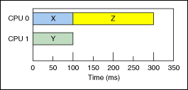
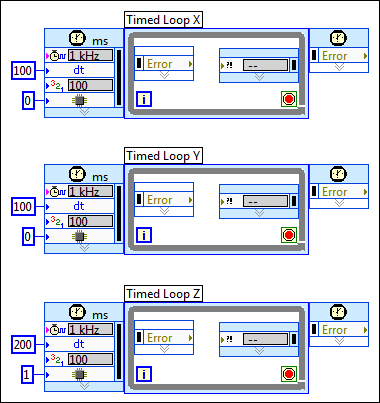
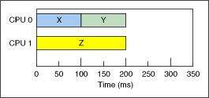

LabVIEW makes it easy to take advantage of multiple CPU systems, also known as multi-core, multiprocessor, or SMP systems, using parallelism or pipelining. In certain cases, you might be able to achieve an even more efficient CPU utilization by manually assigning particular threads to particular processors.
(Real-Time, Windows) You can use the Timed Loop to manually control CPU allocation. For example, consider an application with parallel Timed Loop X, Y, and Z running on a system with two CPUs. The Timed Loops take 100 ms, 100 ms, and 200 ms, respectively, to execute. If the Timed Loops are all set to the default priority, the CPU scheduler might assign Timed Loop X and Z to run on one CPU and Timed Loop Y to run on the other CPU, resulting in a total execution time of 300 ms, as shown in the following illustration.

You could optimize the VI by manually assigning Timed Loop X and Y to one CPU and Timed Loop Z to the other CPU, as shown in the following block diagram.

In this case, manual CPU assignment reduces the total execution time to 200 ms, as shown in the following illustration.

|
Note��The Real-Time Module executes system threads on the default processor (CPU 0). You can reduce jitter by assigning deterministic Timed Loops to a dedicated CPU other than the default CPU. You also can use automatic load balancing on one set of CPUs while reserving another set for manual CPU assignment. The Real-Time Module CPU scheduler handles timed structure threads separately from system threads, and by default performs automatic load balancing over all CPUs for both types of threads. Refer to the National Instruments Web site for more information about specifying the set of CPUs available for automatic load balancing for each type of thread. |